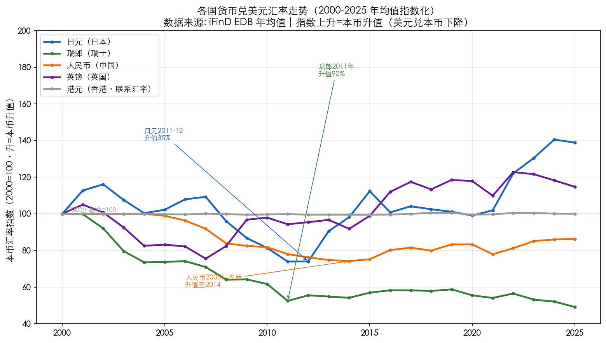
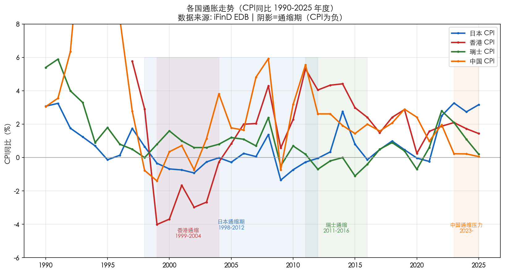
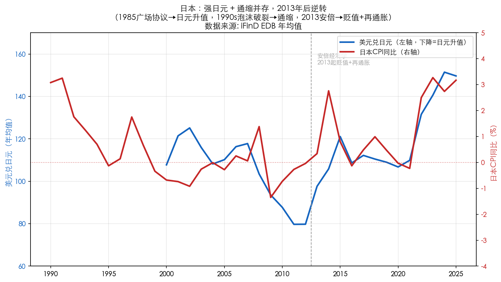

宏观讨论20260908-升值通缩的历史
2026-09-08 · 本币升值 + 内部通缩：历史案例与机制 · 宏观讨论（补档）
本币升值（或升值压力）与内部通缩同时出现——历史上反复发生的组合。六个典型国家/地区，三类范式，一张药方清单，和当前中国的映射。
一、历史事实
历史上同时出现「本币升值（或升值压力）+ 内部通缩」的典型国家/地区有六个，按时间与性质可归为三类。
各国汇率走势（2000–2025）。「本币汇率指数」为各国货币兑美元年均值以 2000 年为基准指数化，指数上升 = 本币升值。港元曲线几乎水平，直观呈现联系汇率「名义汇率不动」的特征。

关键读数：
- 瑞郎：2000 年 1.69 → 2011 年 0.887，升值约 90%（避险资金流入），是升值幅度最大的案例；
- 日元：2011–2012 年约 79.7（较 2000 年升值约 35%），长期强势；
- 人民币：2005 年汇改后从 8.28 一路升至 2014 年 6.14（升值约 35%），此后「811 汇改」后回落；
- 英镑：2007 年 0.4997（1 英镑 ≈ 2 美元）历史最强；
- 港元：始终在 7.75–7.84 窄幅波动——名义汇率不动，但靠内部通缩实现「实际升值」。
各国通胀走势（1990–2025，阴影 = 通缩期）：

关键读数：
- 日本：1998–2012 年 CPI 长期在 0 附近甚至为负（1999 年 -0.34%、2002 年 -0.92%），「失去的二十年」；
- 香港：1999–2004 年 CPI 连续深度为负（1999 年 -4.01%、2000 年 -3.69%），是固定汇率下最痛苦的通缩样本；
- 瑞士：2011–2016 年 CPI 在 0 附近甚至为负（2015 年 -1.1%）；
- 中国：2023 年起 CPI 滑向 0 附近（2023 年 0.23%、2024 年 0.22%、2025 年 0.06%），当前通缩压力显现。
典型案例归类：
类型 A：金本位/固定汇率下的「被迫通缩」（最古老范式）
| 案例 | 时间 | 核心事实 |
|---|---|---|
| 英国 | 1925–1931 | 1925 年丘吉尔以战前平价（$4.86）恢复金本位，英镑高估约 10%，被迫用国内通缩维持竞争力 → 1926 年总罢工 → 1931 年放弃金本位、英镑贬值。凯恩斯称之为「丘吉尔先生的经济后果」 |
| 香港 | 1998–2003 | 联系汇率锁死名义汇率，亚洲金融危机后周边货币贬值，香港只能靠内部通缩（CPI 连续约 6 年下跌、楼价跌逾 70%）实现「实际升值」 |
类型 B：浮动汇率下的「升值 + 通缩」（现代范式）
| 案例 | 时间 | 核心事实 |
|---|---|---|
| 日本 | 1985–2012 | 广场协议后日元从 240 升至 120，长期强势；1998 年起进入持续通缩，CPI 长期负增长 |
| 瑞士 | 2011–2022 | 瑞郎避险升值，2011 年 SNB 设 1.20 下限、2015 年弃守，实施 -0.75% 负利率；2015–2016 年 CPI 陷入负值 |
类型 C：欧元区内的「内部贬值/工资通缩」（无独立货币的变体）
| 案例 | 时间 | 核心事实 |
|---|---|---|
| 德国 | 2000s | 2003–2005 哈茨改革压工资，经常账户顺差升至 GDP 约 7%–8%；因无法用汇率升值，以工资通缩 + 实际汇率贬值完成调整 |
正在进行中的案例——中国（2023 至今）：离岸人民币从 7.3 附近升值至 6.7，而 CPI 长期徘徊在 0 附近、PPI 深度负增长、内需（社零/固投/地产）疲弱。
关键区分：真正的「本币升值 + 内部通缩」要满足两个条件——① 货币有升值压力（或实际升值）；② 国内物价持续走低。香港属「名义不升值、靠通缩实际升值」；德国属「区内实际贬值」；日本、瑞士是最纯粹的名义升值 + 通缩并存案例。
二、机制梳理
1. 外部顺差推升值 + 内部需求疲弱 → 双缺口。经常账户巨额顺差（出口强/内需弱），一方面带来本币升值压力（顺差 = 外汇供给多），另一方面内需不足（高储蓄、老龄化、地产去杠杆、收入预期弱）导致国内物价起不来（通缩压力）。本质：顺差国往往同时是「高储蓄、低消费」的经济体——顺差推升本币，内需疲弱压制物价，两者是同一根「储蓄过剩 + 需求不足」的根上长出的两个果。
2. 升值 → 输入型通缩。本币升值直接压低进口商品价格，通过 CPI 篮子传导为物价下行——这是「升值导致通缩」的直接渠道。
3. 资产负债表衰退（日本范式，最致命）。泡沫破裂后资产价格暴跌、债务刚性不变 → 私人部门从「利润最大化」转向「债务最小化」，即便利率降到 0 也不借钱、不消费、不投资 → 货币政策失灵（流动性陷阱）。
4. 名义汇率不升值，就靠「通缩」完成实际升值。当名义汇率被制度锁定（金本位、联系汇率、欧元区），市场要恢复竞争力，唯一出路是内部物价与工资下跌，让「实际汇率」通过通缩被动升值。
5. 反馈闭环（负循环一旦形成难打破）。通缩 → 实际利率升高 → 债务负担加重 → 进一步去杠杆、不消费 → 需求更弱 → 通缩更深 → 通缩预期固化 → 货币政策失效。

升值 + 通缩是「外部竞争力过强 + 内部需求过弱」失衡的两面——一旦形成通缩预期，会进入「升值→输入通缩→内需萎缩→更通缩」的自强化循环。
三、如何解决
| 手段 | 具体做法 | 采用国 | 效果 |
|---|---|---|---|
| 财政扩张 | 政府加杠杆补内需缺口 | 日本、英国 1931 后 | 日本反复但力度不够、时机过早退出 |
| 激进货币宽松 | QE、负利率、前瞻指引 | 日本、瑞士 | 缓解但未能彻底打破通缩预期 |
| 汇率主动贬值 | 干预、弃守下限 | 英国 1931、瑞士 2015、日本 2013 | 最直接有效——放弃强货币换取再通胀 |
| 通胀目标制 | 明确 2% 目标锚定预期 | 日本 2013 | 改善预期，但未持久达标 |
| 工资增长 | 推动工资-物价良性循环 | 日本「春斗」、德国反转 | 关键但难，日本仍困于此 |
| 结构性改革 | 破僵化、提生产率、修复资产负债表 | 德国哈茨改革、安倍第三支箭 | 德国成功，日本不足 |
| 债务重组/坏账出清 | 银行注资、坏账核销 | 日本 2003 竹中平藏、当前中国注资银行 | 前提条件，不清账难重启信用 |
关键结论：
- 最立竿见影的是「放弃强货币」——英国 1931 放弃金本位、瑞士 2015 弃守下限、安倍 2013 让日元贬值，都迅速扭转了通缩。
- 单纯货币宽松不够——资产负债表衰退中，降息到零也无人借钱（日本教训），必须配合财政扩张 + 坏账出清 + 通胀预期管理三管齐下。
- 最难的是「预期」——需用可信政策（通胀目标 + 持续财政）打破通缩预期，这是日本 20 年没完全做到的。
四、资本市场表现
日本（1985–2012，最完整样本）：股市从 1989 年泡沫顶点 38,957 点跌至 2003 年约 7,600 点，此后 8,000–20,000 区间震荡逾 20 年；债市是大牛市——10 年期 JGB 收益率从约 6% 跌到 0 附近；日元长期强势，海外资产受追捧；房地产崩塌后长期低迷，地价跌逾 60%。特征：「股弱债强、本币强」——通缩环境下债券是最大赢家，股票长期承压，现金（强币）本身就有正实际收益。
瑞士（2011–2022）：股市相对韧性（医药、金融等全球防御型巨头），但出口制造业受瑞郎升值压制；负利率把债券收益率压至负值，债券无利可图；负利率催生房地产泡沫。
香港（1998–2003）：恒指从 1997 年高点 16,820 跌至 2003 年约 8,300，腰斩；楼价跌逾 70%，负资产问题严重。
反例印证——「贬值 + 再通胀」的资产表现。对照安倍经济学（2013 起，日元贬值 + 再通胀）：日经从约 8,000 点涨至 2015 年约 20,000 点（约 +150%），日元从 75 贬至 120+，通缩预期被打破。从「升值+通缩」切换到「贬值+再通胀」，股票会迎来戴维斯双击，债券牛市终结、本币资产吸引力下降。
总结：对当前中国的映射
| 维度 | 历史启示 |
|---|---|
| 定性 | 中国当前「人民币升值压力 + CPI 0 附近 + 内需疲弱」最接近日本 1990s 前段的组合 |
| 最危险的是 | 形成「通缩预期固化 + 资产负债表受损（地产/地方债）」的负循环 |
| 关键药方 | ① 坏账出清（财政部注资银行已启动）② 财政补内需 ③ 谨慎处理汇率（不必主动守强币）④ 通胀预期管理 |
| 资产含义 | 若走向「温和再通胀 + 稳住汇率」，利好权益（尤其顺周期/资源/红利）；若滑向日本式「长期通缩 + 强币」，则债券走牛、权益长期磨底 |
数据来源：各国年度 CPI 同比与汇率（1990–2025）均来自 iFinD EDB API 实际查询；早期案例（1925 英国金本位等）以经济史公开资料文字描述；机制与药方归纳参考凯恩斯、辜朝明资产负债表衰退理论等公开研究。以上为基于经济史的一般性分析，不构成投资建议。
原文 / 观点：Matt · johsnon0827@gmail.com